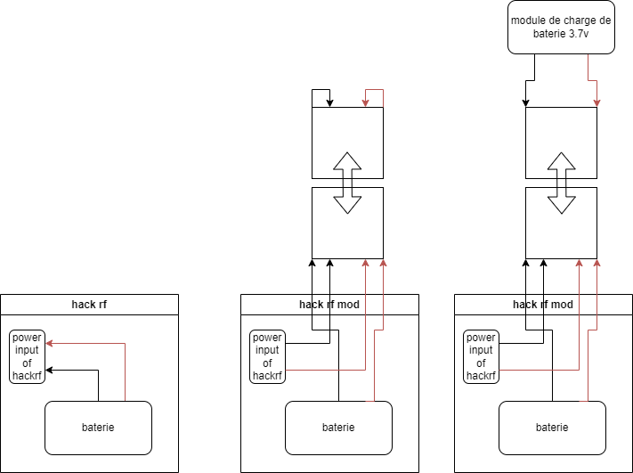
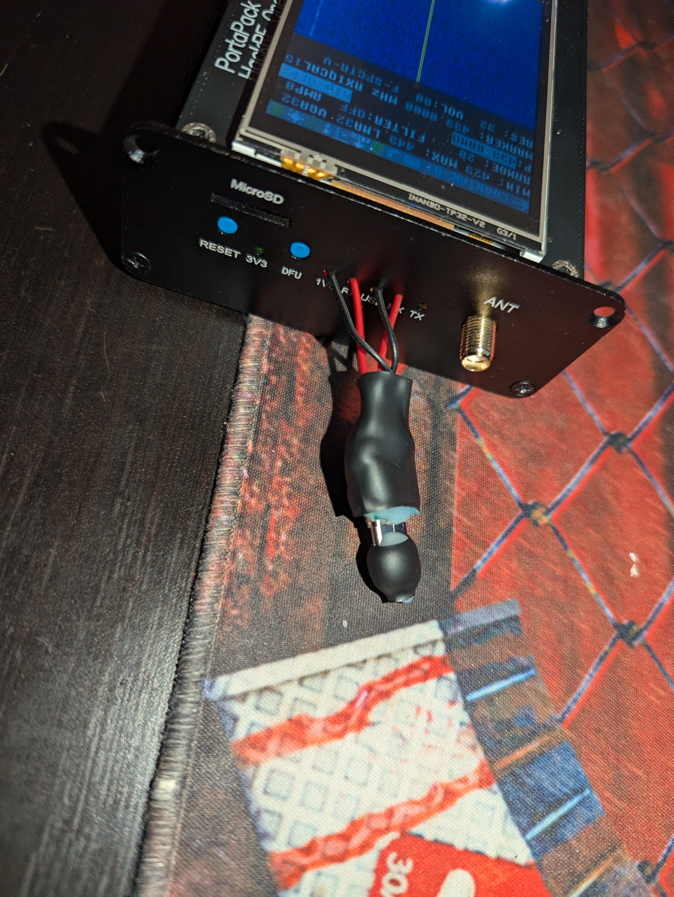
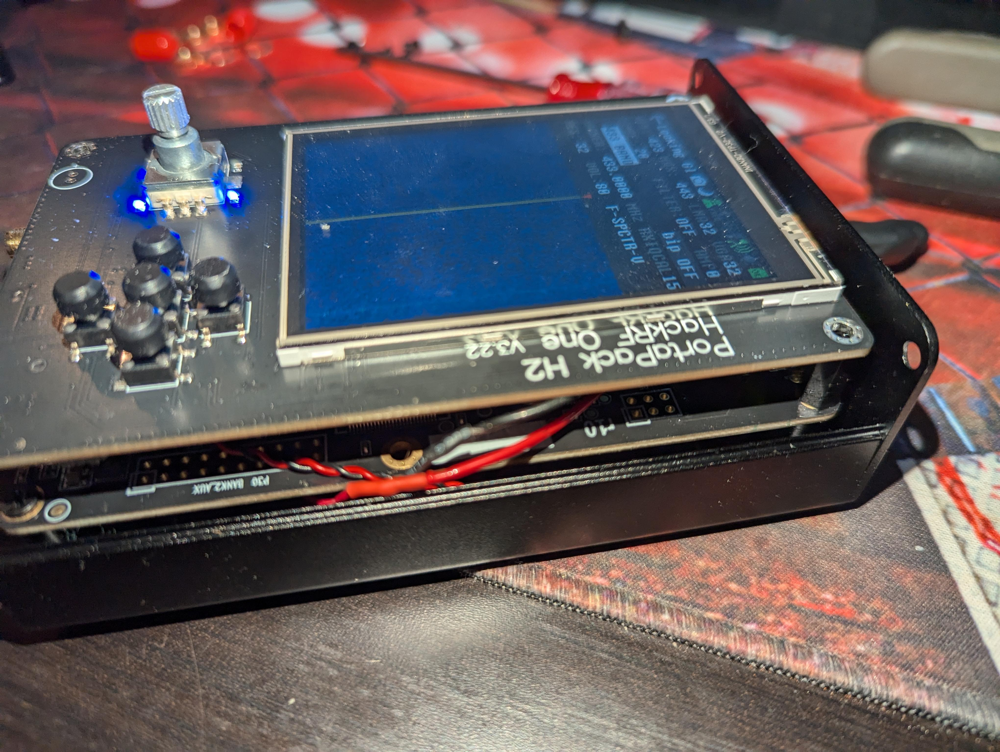
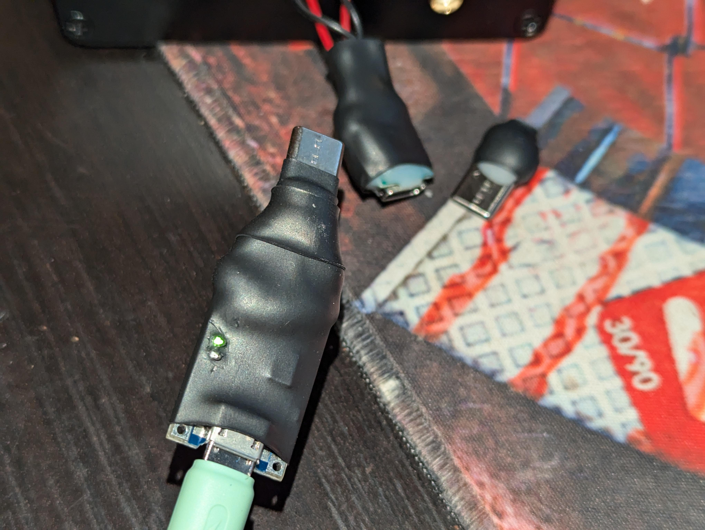
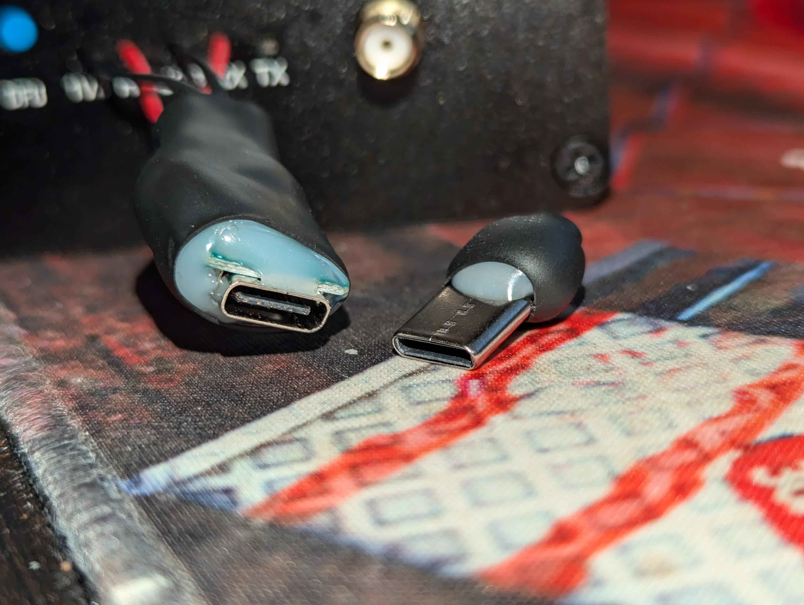

Déjà premièrement c'est quoi le hack RF
https://github.com/portapack-mayhem/mayhem-firmware
C'est un petit appareil permettant de trafiquer les ondes radio, je crois que cela va de 1 mHz ça à 6 GHz, on peut écouter plein de choses et l'appareil n'est absolument pas bridé donc pour bidouiller les ondes radio c'est le must have.
Par exemple, j'ai réussi à capter le signal de ma clé de voiture pour ensuite remettre ce signal pour l'ouvrir
(Une simple attaque par replay même si on peut pas vraiment parler d'attaque puisque c'est juste une copie, de plus les codes changent avec les clés de voiture donc rien de bien subversif ici)
On peut faire d'autres choses rigolotes comme localiser les avions au-dessus de nous, écouter la radio (étonnant), capter les différents capteurs autour de nous comme la pression des pneus de voiture et plein d'autres choses intéressant
Je pose ce lien ici qui présente en français ce qu'on peut faire
lien : HackRF-One-French
Évidemment on peut aussi faire du brouillage d'onde et d'autres choses interdites, donc attention comment on va émettre des ondes, mais pour l'écoute tout est légal, et c'est très intéressant de découvrir ce domaine
Bref petite présentation de la modification que j'ai apporté, je possède une version portable disposant d'un écran de boutons et d'une batterie c'est le portapack h2 Le problème c'est que un clic simple sur le potentiomètre allume l'appareil et un double clic et l'éteint C'est donc très problématique pour le transport étant donné que un simple clic peut vider la batterie dans un sac
Après un rapide démontage, j'ai sectionné les câbles de batterie afin de faire le montage suivant    Comme on peut le voir le câble plus et moins de la batterie avant relié au HACk RF sont désormais reliés à un port USB type C
Avec la norme USB on a quatre principales broches sur ces petites prises acheter sur Aliexpress le plus le moins le data plus et le data moins
L'insertion d'un petit dongle USB on va venir fermer le circuit afin de connecter la batterie au hackRF, et l'insertion d'un module de charge de batterie 3,7 v va venir déconnecter le hack RF, et recharger la batterie

Donc une pierre deux coups car le rechargement de la batterie ne peut se faire uniquement avec l'appareil allumé

Conclusion, ce n'est pas une solution parfaite car le port USB ressort avec des fils c'est pas très propre mais la double utilisation pour charger la batterie et empêcher l'allumage intempestif répond parfaitement aux besoins